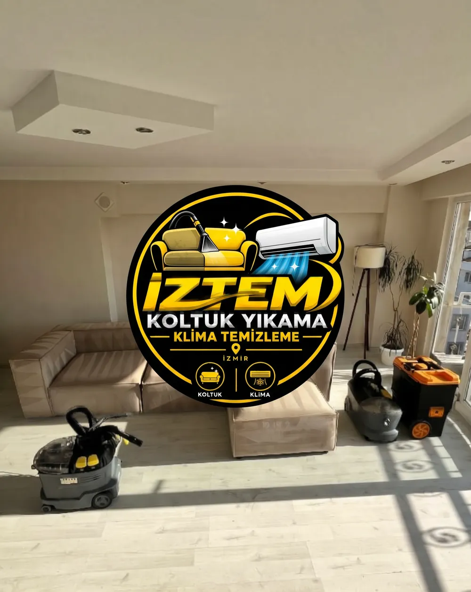

Çekyat Yıkama
Kısaca: İZTEM, çekyatların oturma ve sırt yüzeylerindeki günlük kirleri ve uygun lekeleri kumaşa uygun yöntemle evinizde yıkar.

Çekyatlar hem oturma hem yatma için kullanıldığından çabuk kirlenir. Kumaşın yapısına göre yöntem belirler, oturma ve sırt yüzeylerini temizleriz.
Çekyatı taşımanız gerekmez; makinemizle odada yıkama yapılır.
Nasıl çalışıyoruz?
- Çekyat fotoğrafını gönderin.
- Tahmini ücret ve randevu.
- Yerinde yıkama.
- Teslim.
Hizmet bölgeleri
Çekyat Yıkama hizmetimiz Çiğli, Menemen ve Karşıyaka ile Evka-2, Evka-5, Egekent, Villakent, Ulukent, 9 Eylül, Seyrek, Bostanlı ve Mavişehir mahallelerinde geçerlidir. Her gün 08:00–22:00, randevuyla.
Sık sorulan sorular
Çekyat yıkama yerinde yapılıyor mu?
Evet, çekyat bulunduğu yerde yıkanır.
İlgili hizmetler
Koltuk Yıkama
İzmir Çiğli, Menemen ve Karşıyaka'da evinizde yerinde koltuk yıkama. Profesyonel makine, k…
Kanepe Yıkama
Kanepelerinizi evinizden taşımadan yerinde yıkıyoruz. Kumaşa uygun ürünler ve profesyonel …
Yatak Temizliği
Yatak yüzeyindeki toz, kir ve temizlenebilen lekeleri profesyonel ekipmanla evinizde temiz…
Randevu ve tahmini ücret için yazın veya arayın
Koltuk veya klima sayısını ve fotoğrafı gönderin, online tahmini ücreti iletelim.